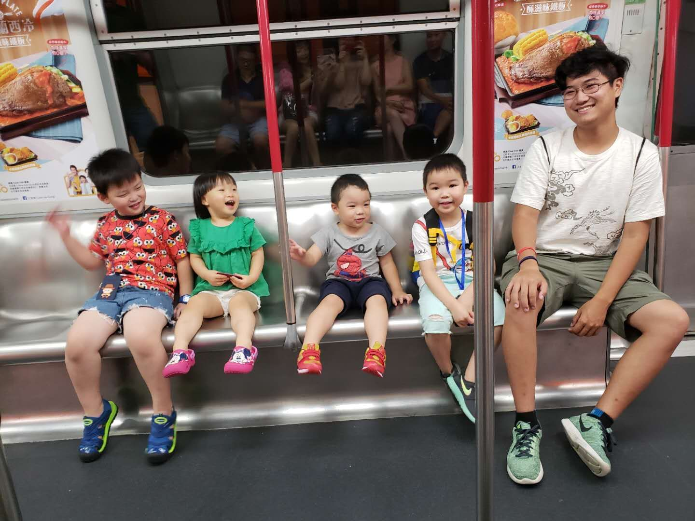

This website was created with the intention to be a presentable platform for my work portfolio however due to my longing to document
my daily activities and observations, I have decided to dedicate a subsection of this website towards a blog.
While I could use a more common platform such as wordpress, tumblr, or even youtube, I won't.
Why? My laziness surpasses common sense. It even dares to allow professional and personal life to clash.
Furthermore this website launched around the middle of May 2018, but this blog will only date back to the very near end of June.
Why? Because I'm lazy? Not in this case. I wanted to contribute to the blog during the months of May and June, however I quickly ran into a problem in
the midst of my first entry.
I have nothing to write.
What a fool I was. Like a fisherman casting his rod into his porcelain throne, I
too have nothing to show. But alast, two months later I have arrived with a **plentiful** catch.
Recess in Hong Kong: Week 1
06/28/18 - 07/05/18
During finals week of my spring semester of my sophomore year, my mother sent me a message asking if I wanted to come with her to Hong Kong this year.
The last time I went was 8 years ago when I had just finished 6th grade. The time before that was when I was two and leaving my birthplace for good
old 'murica.
Since the last time, I've rejected my mother's offer every year reluctantly due to the harsh jump in schoolwork from middle school to
Stuyvesant High School to adjusting to the college lifestyle, etc. Anyway, I decided to accept her offer since I knew I'd be busy with internships
and job searching come the following years.
Fast forward to T-minus 2 weeks before the flight, my father suddenly decides to come along with us to Hong Kong.
This was a big deal to me because in my 20 years of living, my father has never taken a break from work for longer than a weekend.
The man was a workaholic. When my father wasn't working he was drinking, sleeping, or doing housework. Hell, when he was given an extra day off because
he covered someone's shift earlier, he became sick on that day.
So for him to come out of nowhere and essentially agree to spending an entire month doing absolutely nothing productive, I was shocked, appalled. I
was anxious to see how he'd adjust.
June 28, 2018
I woke up at 10:00AM EST.
Slept a solid 8 hours while my mother, father and younger brother were too anxious to get a good night's rest. I acted smug about it
but in reality I didn't get enough sleep the day before cause I slept over at my friend's place.
We arrived at JFK at 1:20PM, an hour and a half early for our flight. Got through pre baggage check and TSA with no problem.
With nearly an hour to spare, I sat near the gate and pondered how to solve one of mankinds most difficult problems.
Jetlag.
How does one avoid it? Professional competitors are constantly traveling across the globe to participate
in tournaments that sometimes require participants to stay warm for more than ten hours each day. The number 1 excuse used by these pros is jetlag. Try
re-enacting evo moment #37 when your brain is thinking that it's time to knock out IRL.
Since I'd be landing around 19:00 HKT, it wasn't impossible to just have an extended 10 hour rest when I landed, and that was what I decided to do.
My mother decided to ride Cathay Pacific upon suggestion from my Aunt who was once a flight attendant.
I personally have little to no experience with airlines,
my only request was to avoid United Airlines due to their controversial mistreatment of their customer on United Express Flight 3411 during April 9, 2017.
There were only a few things to note about the flight so I'll go over them quickly.
- Sitting in the middle is not so bad
- Easy access to bathroom
- Least susceptible to blinding above stratosphere sunlight
- Service was fantastic (at least by my standards)
- Attentive and often had what I wanted
- Even had alcohol
- Food was actually pretty good I always had the impression that airplane food was substandard but I was proven wrong
- For lunch I had braised beef with stir fryed potatoes, shrimp salad, a bread roll with butter, a piece of dark chocolate and haagan daz ice cream.
- For dinner I had sweet and sour pork over jasmine rice, a bread roll with butter, and mango mousse with shredded almond on top.
- Decent selection of shows and movies. Watched
- Saving Private Ryan
- Brooklyn Nine Nine
- How its made
- a bunch of TED talks
- and best of all... BLUE PLANET II BABY. Dat's that good stuff.
- But shoutouts to the documentary ART OF THE GAME: Ukiyo-e Heroes,
you can see the trailer here: Ukiyo-e Heroes Trailer
Randomly watched this on the plane and recognized the prints immediately from Comic Con a few years back. It was super cool to watch how it all came together.
June 29, 2018
In between lunch and dinner I had around 3 hours of sleep.
When we departed the plane, the sun was just beginning to set behind the mountains that shaped Hong
Kong and it's surrounding lands. This awe inspiring sight was almost enough to distract me from, without a shadow of a doubt, the worst part of Hong Kong.
Sweat
The moment
you step out of the plane, you're hit with this wave of heat and humidity that's nearly enough to make you take the next flight back to New York. It was
33 degrees celcius, or 91 degrees fahrenheit, at 20:00.
We were greeted by my grandparents. Asian genes are something else you know. They didn't look like they've age a second.
After receiving all our luggage, we rushed to the nearest bus stop. The buses were similar to the
UK's signature double deckered buses, which made sense since they used to occupy the island. We then got off the bus cause grandfather wanted to give us
the "Hong Kong" experience by choosing the most "traditional" place to eat.
In simple terms, he means poverish. The place was a real dump. I'm talking inconsistent
seats, dirty table cloths, open kitchen with shirtless chefs and newspaper flooring, random puddle of some unidentifiable liquid, people smoking within the
restaurant. All the signs. When you're in Chinatown, NYC, this is actually optimal. The best places are always small, dirty and rude. The reasoning is
that have held themselves up through the taste of their dishes alone. The fancier looking places are tourist traps. Once you're inside, you've already done
screwed up.
BUT the food at the place was awful and we dipped asap for our next bus.
We arrived at the street of my grandparent's residence. I recognized
the smell in the air. It's not a smell that you can really describe to someone easily. It was simply a nostalgic smell that you can't forget. The place was
alot smaller than I remembered-- makes sense considering I've grown much since then. I've attached a photo which gives a decent idea of the size of the
place. This photo was taken from the front door of the apartment, so you're pretty much seeing the place like any visitor.
The first room you enter is the
living room. Then behind my uncle (the guy in the orange shirt) is a bedroom with a bunkbed and not much else cause it simply can't. On my grandmother's
(the person in the front) left is the kitchen, laundry room and entrance to the bathroom all bundled in one. Approximately the same size as the bedroom.
To the right is another bedroom and behind the fish tank is another bedroom. This is a three bedroom apartment. Really puts things in perspective.
June 30, 2018
Day started at 7:00 HKT.
Slept a good nine hours. I woke up feeling pretty smug.
Oh, I failed to mention that my parents and brother are sleeping in my
aunt's place a few train stops away.
I received a message on from my mother via WeChat. Apparently she woke up at 5:00 and slept a mere four hours. How unfortunate :).
My grandfather was already folding clothes that were left to hang outside last night. At the same time, my grandmother was doing her
morning prayers. One day I'll have to ask her why she decided to put her faith in Buddhism.
Grandfather and I left to get some breakfast at this place called Café de Coral.
In the 8 years I was away, this fast food branch managed to expand throughout all of Hong Kong-- even managed to sneak into the residence areas.
The café was located in the mini mall a few minutes away and stuck out like a sore thumb. It shared the floor with an disorganized newspaper stand, an
old fashioned candy shop, a dim sum restaruant, and a dollar shop.
Café de Coral was very much comparable to a Western diner, except it was self served
and of course--fast. There were a variety of options in the form of a platter. For your meat options you had the choice between honey-glazed chicken breast,
fried pork cutlet, sausage, ham, or salted fish. You also receive eggs (either be sunny side up or scrambled). As well as buttered toast or a softer bun-like
loaf. For a mere 5 extra HKD (or 64 cents), you can add a bowl of noodle soup-- also with a huge number of options. I personally prefer the oxtail soup
with macaroni. And finally for the drinks, you have the option between milk tea, hot tea, and coffee.
All of this for under 5 USD. No wonder it has taken
the island by storm. If the US had this, McDonalds would have a run for it's money.
After we finished our feast, we chatted for a while. It's difficult talking to someone when your common language
with them is both your secondary language. My grandfather mostly speaks Cantonese and my secondary language is Fuzhounese. It works out. Although I'm
pretty sure I accidentally said yes to him asking me if I was going to move to Hong Kong with my apparently existing girlfriend.
Later on my uncle took my brother and I to the Hong Kong Museum of Coastal Defence.
It was fairly small compared to the museums in NYC but being located on the very site the events documented took place gave it
an authenticity that you can't get from the MOMA. There was a floor dedicated to all the events that took place on the coast such as the
opium war where the Europeans succeeded in getting the locals super high and all the way up to the British giving Hong Kong back to China in 1997.
I have to thank the British for making Hong Kong very accessible to English speakers because I can't speak a single word of Cantonese.
I've attached a few pictures featuring some weaponary and the coast itself.
At night, the whole family got together to eat dinner at the dim sum place I briefly mentioned earlier.
8 years does a lot to a family. Since then, four new members of the family have popped up. I've attached a photo for visuals.

From left to right, the new members are Wise, Amber, Jasper, and Kayden.
Wise(6) is a little rascal and is the noisiest of the bunch.
Amber(3) loves to silently avoid eating.
Jasper(3) loves attention and is quite spoiled.
And finally Kayden. No offense to the others, but Kayden is by far my favorite child. Maybe to have ever existed. Surprisingly, Kayden is already 6.
He could pass as a 3 year old. Even so, he's incredibly smart and well mannered for a 6 year old. He's decently fluent in both Cantonese and English and
when he doesn't know a word, he'll ask for the definition. Hell, my brother is 12 years old and Kayden seems way more knowledgeable and well mannered
than him. I'm also not totally being biased cause he warmed up to me immediately because I brought my switch or whatever.
I've always been against having kids but if I did have one, I hope that kid is like Kayden.

July 1, 2018
Woke up at 7:00 HKT again.
Cafe de Coral again.
Keeping track of my weight might be a wise idea.
Today I made an attempt at reading the local newspaper. The only headline I recognized was July 1, 1997, the day the British gave back
Hong Kong to China. Had I'd been born ten months earlier I'd be a legal British resident.
This entire weekend was a national holiday so the whole family was free to have some lunch at this extra fancy dim
sum place near Tseung Kwan station.
Only thing worth noting was the Kayden was disappointed that I didn't bring my Nintendo Switch which made me sad.
We (myself, brother, and two cousins) left early and headed for the Golden Computer Arcade located right next to Shan Shui Po Station.
This place... is amazing.
I wasn't able to stay for long because my brother hated the crowded area, but I'll definitely go again soon.
It's the techie heaven. Cheap and competitive prices for all your PC and gaming needs. Tech heaven on Earth. Maybe I'm over exaggerating,
but that's only because NYC is plagued with shitty Best Buys
and Game Stops that are allowed to charge extra on everything.
I'll have more to say the next time I go because this is worth an entire day's post.
July 2, 2018
Woke up at 8:00 HKT.
Cafe de Coral.
Might be getting too used to this.
Today we went to the beach.
I personally don't care for the beach but my brother wanted to show
off that he could swim. There's not much opportunity to learn how to swim in NYC. Closest free option is Coney Island which is two hours away by the MTA.
My brother was lucky enough to receive swimming lessons. Not jealous at all :|. Besides I don't like getting wet cause my hair is very voluminous.
I'm not exaggerating when I say that I look like a wet poodle in the water.
While my brother, uncle and cousin froliced in the cold fish piss plastic filled dump we call the ocean, I walked along the coast looking for anything
interesting.
Surprise!
I found nothing of interest.
Blue Planet II has spoiled me greatly.
There's a reason 5 hours of presentable footage took 16 years to collect.
All I learned was that sandy water feels as course as it sounds and to no one's
surprise, attractive people don't go to the beach. At the very least, burying my brother and giving him breasts was entertaining enough to make the
trip worthwhile.
This day was pretty hectic. We had to leave the beach in a rush because my aunt failed to mention that we were meeting with the rest of
the family at some fancy restaurant for my father's birthday.
So we quickly went back to the house, cleansed ourselves, dressed up and left again.
Honestly this entire week has been hectic as hell with no free time to myself which is why this entire week has been bunched up into one post.
It turned out that this fancy restaurant was extra fancy for the reason that every dish was vegetarian so even my Buddhist grandmother could enjoy
herself.
And by god, the food was incredible. There were these skewers and sweet and sour chicken that tasted like chicken but wasn't chicken.
Fish cakes without fish that tasted even better than fish. Cantonese pancakes with the right amount of crispiness. Meatloaf with no meat.
Vegetarian stuffing with lettuce wrap and an accompanying sauce. Donuts with heated frosting on the side.
Okay that's not really impressive but it was really tasty. All these pseudo meats were imitated
using a certain ratio of flour and mushroom which both can produce a lot of unique flavors when combined with certain sauce and spices. Honestly this meal
almost convinced me to become a vegetarian.
For that night, my brother and I agreed to switch sleeping arrangements. I would be sleeping at my aunt's
which was apparently a "high class" residence area.
Honestly, I wasn't ready to learn what that meant.
In order to enter the residence area, you needed to
use a special octopus card.
I haven't explained what an octopus card is so I'll explain briefly. An octopus card is a contactless smart card that has
many functions including online and offline electronic payments, public transportation, parking meters, library card fees, school attendance, and even as
a keycard to access residential areas. This card pretty much did everything, thus losing such a card meant heavy consequences. My aunt's card gained her
entrance to the building.
Classifying the residence as "high class" was quite literal. It was over 57 stories tall and my aunt lived on the 50th floor. Her
apartment was still small like any other place except everything about it screamed expensive. The floor, couch and door was white and pristine. The bathroom
and TV were state of the art. Kitchen with the latest applicances. If it weren't for the toys on the floor, this apartment would be on the cover of Better
Homes magazine.
However the most startling aspect of the home was the unexpected resident.
A Filipino "domestic worker" named Grace.
My Aunt and Uncle owned a slave.
You might think I'm exaggerating but everything about it was just wrong. Grace's clothes were cheap looking. Her bed was just an elevated extended
window sill and a thin blanket. She wasn't exactly treated super highly by my Aunt and Uncle. Even Kayden seemed to treat her differently. Thinking about
the scenario made me restless that night and I realized that living in such a scene didn't suit me right.

July 3, 2018
Didn't get much sleep.
Woke up around 6:00 HKT.
The theatrical thing to claim would be something like "my self-concious wouldn't let me sleep until moral
justice was served!" In reality, the blanket only fit my torso at best. I spent the next hour researching about these "domestic workers".
Some facts worth noting:
- Filipino labour export was initiated in 1974 by Filipino president Ferdinand Marcos to accommodate the country's poor economic state
- This export coincided with HK's economic rise, thus demand for these domestic workers to manage homeowner's household increased dramatically
- By 2013, there was an average of one FDW (foreign domestic worker) in every eight households as well as making up 10% of HK's workforce
- From 2003 to 2008, employment of a FDW cost a mere 9600 HKD for a two year contract
- FDWs were required to live in their employer's home
The good news is that workers and welfare groups have rallied enough attention for the MAW to increase wages and conditions.
The bad news is that these workers still don't make standard minimum.
Furthermore this recent development has answered some of the questionable interactions I witnessed earlier. For instance, the day I went to Sham Shui Po to see the Golden Computer Arcade, my cousin told me to pay no attention to the gathering of Filipino people near the station and apoligized for bringing me there on that particular day.
Now I know that those people were FDWs on their legally mandated day off and that unfortunately the majority of HK residents have a low opinion of them. While I can't say that I am surprised by this, I can't help but feel sad that this mistreatment of others based on differing backgrounds has repeated itself within human history again and again.
Even worse, there's a huge obstacle humanity has yet to overcome before this one: the bystander effect.
But enough about domestic issues, onto international issues!
Earlier, I was half asleep in Wan Chai trying to find the goddamn building where I could get a visa to go to China.
Took us about thirty minutes from the station because my mom didn't trust Google Maps. When I learned the building name later on, I learned that it should've took us three minutes.
When we got to the office, I was told to wait in a line for some unknown reason. Waited nearly two hours before learning that the line was to get a ballot and we were told "when the screen shows the code on your ballot, go up to the designated booth." We waited on line so we could be placed another line.
B0001 showed up around 11:00.
By the time 12:30 came along, B0007 did not even show up yet.
Our ballot was labeled B0023.
By the time we would be called up, it'd be past 17:00.
what are we going to do? We won't make it to the appointment to renew my ID at 15:00. All this for a visa to a country I don't really care about. I'm only doing this because my father hasn't gone back to his bum village in fourteen years. There's a reason we haven't been there in fourteen years. There's no wifi there. How would I update my blog?
Okay maybe I didn't really care that much about the blog, but I really had no idea what I'd do there.
A whole ten days to eat the questionable local food, climb up mountains, get bitten by bugs, enjoy a view that some guy on youtube probably uploaded with 360 degree vision, get bitten by bugs on the way down the mountain, eat more questionable food and then shit it all out in a bathroom more unsanitary than the mcdonald's public bathroom in the East Village?
I ended up telling my mother how I actually felt and she was... surprisingly receptive? It seemed like she didn't want to wait any longer and felt the same way about China as me. She reassured me and said she'd convince my dad to respect my wishes. She'd still be going with my father and brother because she felt obligated.
Overall the lesson for today is to speak up and maybe someone will listen.
July 4, 2018
I have a feeling today will be similar to a lot of days during this vacation so I'll keep it decently short.
These days often involve the most of the people living here in my grandparent's apartment taking the MTR to Tseung Kwan O where my
Aunt Crystal's high class apartment is.
There we eat at varied places around the area and then book a timeslot at their high class club where we can participate in recreational
sports such as Ping Pong, Bowling, Badminton, Swimming, Billiards, etc.
Then we'll look around the mall and more than likely buy nothing. Finally we'll eat again and all go home.
Very simple day, and definitely not worth describing every little detail. Just some pictures here and there of some food.
Although my phone camera is busted right now so I'll
have to buy a new phone soon. I'll call these days "filler episodes."
Also Happy Independence Day to America! The big 242
July 5, 2018
Another semi-boring day, gonna be a short post.
My grandfather wants to buy some hard liquor today and apparently Causeway Bay is the place to go.
He brought me along because there's some good food around there.
Since it was on the same line as us, it didn't take long to arrive there.
Since this is going to be a short post anyway, I'll take this chance to talk about the MTR subway system.
The MTR subway system consists of a mere 11 metrolines(MTA has 26) that
span across Hong Kong Island, Kowloon and New Territories. The route for today is from Sai Wan Ho to Causeway Bay station. The 2.6 mile journey took a
total of ten minutes. That is the same time as taking a car assuming that there is no traffic and prolonged stop lights. In comparison to the MTA, a 2.3
mile journey from say Times Square to W4st Station takes twelve minutes if you're lucky. The MTA has an approximate 58% on-time performance while the MTR
boasts an incredible 99.9%. This achievement is due to Hong Kong's government strictness. The MTR must report delays longer than 8 minutes to the goverment
and any delays between 31 minutes and an hour a fee of a million HKD and longer even more. In 2013, there were a mere 143 incidents. The MTA? 67,450 delays
just in May 2017 alone. The MTR is also safer and cleaner than the MTA due to having automatic platform gates so travelers bare no risk to falling or
littering on the tracks. Despite all of these improvements, the MTR is still cheaper on average than the MTA. The MTA costs 2.75 USD per ride which is near
22 HKD. If you stay within Kowloon and Hong Kong Island (which is more than likely), you will pay half as much, more likely less depending on the
distance and you can pay it just by scanning your octopus card which is far more convenient than a metro card.
I didn't even mention the best part. There's
signal throughout the entire system. No more idling around between stops just to take out your phone for 20 seconds at a stop and pray you catch signal.
I could go on and on but to summarize: The MTR is strictly better in every way.
Causeway Bay is pretty similar to mid/downtown Manhattan. It has it's own Times Square. It's own Chinatown (in the sense that it has a lot of restaruants). Busy roads etc.
My gramps was set on going to one of the restaruants in Kyoto Plaza but wasn't sure which.
This plaza is ten stories tall and each story has a restaruant. The elevator leads you directly into the place so there's no confusion.
He kept trying to ask me where I wanted to eat but I kept saying up to him to be polite. I also didn't want him to spend that much money because I know he's going to try to pay for it and if the place is too expensive I'll feel bad. Another inconvenience was the language barrier. It's difficult to convince a stubborn old man about anything, especially when you're bad at speaking his language.
So what I did was go on yelp quickly and look up the most promising place in the plaza. I decided on Yoshinoya.
It served Japanese cuisine, had 4.5 stars on Yelp and wasn't pricey.
Sounds great right?
Not necessarily.
I chose the place in a rush but failed to realize that this was a common fast food chain in HK.
It was too late; we were already in line.
The place didn't look bad, better than most restaruants. The fact it was self serve made it more obvious it was fast food but Cafe de Carol is self serve so... hey!
We both decided to get a beef bowl and my grandfather was expectedly disappointed.
The food didn't taste bad but it wasn't as presentable as the menu advertisement made it look which already soured the dish for my gramps before he could even take a bite. The meal was almost completely ruined by the fact that I was given a coke instead of an unsweet ice tea but I managed to hide that mistake from him. Having him complain directly to management would've solidified me as the worst recommender. I don't think my gramps ever realized that the place was a fast food chain.
The lesson for today is: If you're receiving a free meal, do your best to make your donor happy.
Recess in Hong Kong: Week 2
07/06/18 - 07/12/18
July 6, 2018
July 7, 2018
July 8, 2018
July 9, 2018
July 10, 2018
Woke up at 9:00AM.
Gramps and I headed to Cafe Carol again.
Despite how often I've been to this place, I haven't posted any pictures of my meal. I would have posted one after my first meal but my phone's camera
has been busted for quite a while now. It was irresponsible of me to not do something about this before my vacation but I didn't really have many options.
I've been using my Oneplus 3 for a bit over two years now and the camera focus no longer works. My fault honestly, dropped it way too many times. The
screen hasn't cracked at all though. This phone only cost $400 bucks but it has the specs of an iPhone 7 and doesn't crack when you set it on a table.
It hasn't slowed down at all like most name brands either. Honestly my favorite part of this phone is the amoled screen which essentially gives you the
option to display pure black without backlight, thus saving your phone's power and your eyes as well.
Since this phone is so great, I haven't felt a need to get a new phone but repairing it at a typical repair shop would cost more because it's not an
iPhone or samsung. The cheapest option would be a oneplus service center. Unfortunately there's no such center in New York City.
Fortunately there's one in Hong Kong.
I headed for Kwun Tong and gave in my phone for repair. One plus quotation said it'd only cost 112 HKD. That's a bargain compared to getting a new phone.
Kwun Tong was nearby Sham Shui Po so you know I had to make a stop by. Of course I couldn't go phoneless so my Aunt hooked me up with a spare.
Unfortunately she forgot to tell me the password so all I really had was a watch.
By the time I realized this, I was already in Sham Shui Po so I just had to browse the electronics super mall without the internet to help me gauge prices. I promise to provide pictures next time.
The Golden Computer Arcade has dozens of small shops each selling items such as cables, monitors, graphics cards,